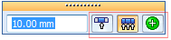
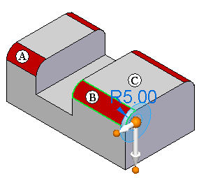
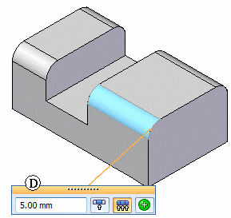
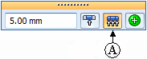
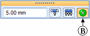
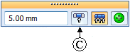

Editing single value driven features
Modify a single value driven feature as:
-
An entire feature
-
Only selected face(s)
-
All similar faces in the model
A set of select options are available on the value edit box.

Single value driven features are:
Part
-
Round
-
Equal Offset Chamfer
-
Draft
-
Thin wall
Sheet Metal
-
Break Corner
Each of these features contain a single driving value that can be modified.
Edit a single value driven feature by selecting any face of the feature. For example, select a face (B) of a single value driven feature (A). A value edit handle (C) appears.

In this illustration, the red faces are all the faces of a round parent feature (A).
Select the value edit handle (C) to display the value edit box (D).

Three options are available for editing a selected single value driven feature.
Option (A): Default setting. All Feature Faces - Include all similar faces in the parent feature.

Option (B): Selection Manager - Include all similar faces in the model.

Option (C): Include only the selected faces.
